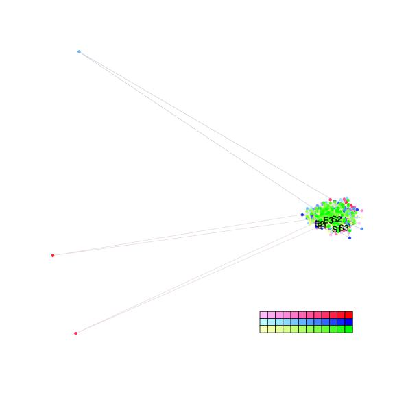
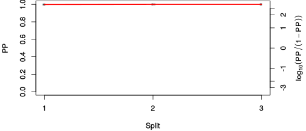
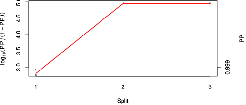

| chain # | burnin | subsample | Iterations (remaining) | command line | subdirectory | directory |
|---|---|---|---|---|---|---|
| 1 | 10000 | 1 | 90000 | bali-phy E1_AA_red3_v2_Alpha.fas -s 22433 -n Alpha_c1 | Alpha_c1-1 | /DATA/work/ONCOGENEVOL/database/trees/Bali-Phy/E1 |
| 2 | 10000 | 1 | 90000 | bali-phy E1_AA_red3_v2_Alpha.fas -s 63953 -n Alpha_c2 | Alpha_c2-1 | /DATA/work/ONCOGENEVOL/database/trees/Bali-Phy/E1 |
| 3 | 10000 | 1 | 90000 | bali-phy E1_AA_red3_v2_Alpha.fas -s 53236 -n Alpha_c3 | Alpha_c3-1 | /DATA/work/ONCOGENEVOL/database/trees/Bali-Phy/E1 |
| P(data|M) = -7234.600 +- 0.707 | Complete sample: 3 topologies | 95% Bayesian credible interval: 1 topologies |

Phylogeny Distribution

| Partition support: Summary |
| Partition support graph: SVG |
| 50% consensus | Newick (+PP) | SVG | |||||
| 66% consensus | Newick (+PP) | SVG | |||||
| 80% consensus | Newick (+PP) | SVG | |||||
| 90% consensus | Newick (+PP) | SVG | |||||
| 95% consensus | Newick (+PP) | SVG | |||||
| 99% consensus | Newick (+PP) | SVG | |||||
| 100% consensus | Newick (+PP) | SVG | |||||
| MAP | Newick (+PP) | SVG | |||||
| greedy | Newick (+PP) | SVG |
{kind=link}
{kind=link}
{kind=link}
{kind=link}
{kind=link}
{kind=link}
{kind=link}
{kind=link}
Alignment Distribution
Partition 1
| Diff | Min. %identity | # Sites | Constant | Informative | ||||
|---|---|---|---|---|---|---|---|---|
| Initial | FASTA | HTML | Diff | 4.39% | 660 | 1 (0.152%) | 148 (22.4%) | |
| Best (WPD) | FASTA | HTML | AU | 38.9% | 810 | 158 (19.5%) | 196 (24.2%) |


Mixing
| burnin (scalar) | ESS (scalar) | ESS (partition) | ASDSF | MSDSF | PSRF-CI80% | PSRF-RCF |
|---|---|---|---|---|---|---|
| 611 | 4044 | 18460.474 | 0.000 | 0.000 | 1.001 | 1.008 |
Projection of RF distances for the first 3 chains3D | Variation of split PPs across chains |
Scalar variables
| Statistic | Median | 95% BCI | ACT | ESS | burnin | PSRF-CI80% | PSRF-RCF |
|---|---|---|---|---|---|---|---|
| prior | -528 | (-589.2, -470.7) | 59.96 | 4503 | 208 | 0.9998 | 1.003 |
| prior_A1 | -509 | (-568.9, -452.2) | 55.35 | 4877 | 203 | 1.001 | 1.004 |
| likelihood | -7192 | (-7231, -7153) | 38.52 | 7010 | 292 | 1 | 1.004 |
| logp | -7720 | (-7763, -7682) | 62.23 | 4338 | 455 | 1.001 | 0.9974 |
| Heat.beta | 1 | ||||||
| Scale1 | 2.066 | (0.8086, 4.296) | 1.007 | 268041 | 81 | 1 | 0.9989 |
| S1.F.pi.A | 0.07374 | (0.0623, 0.08565) | 7.8 | 34616 | 125 | 1 | 1.001 |
| S1.F.pi.R | 0.04603 | (0.03692, 0.05585) | 8.601 | 31392 | 560 | 0.9995 | 1.008 |
| S1.F.pi.N | 0.0365 | (0.02908, 0.04461) | 8.353 | 32325 | 288 | 0.9998 | 0.9959 |
| S1.F.pi.D | 0.06158 | (0.05082, 0.07282) | 8.303 | 32518 | 341 | 1 | 1.003 |
| S1.F.pi.C | 0.05257 | (0.04124, 0.06483) | 8.138 | 33177 | 560 | 1 | 1.005 |
| S1.F.pi.Q | 0.04608 | (0.03756, 0.05525) | 8.501 | 31760 | 196 | 0.9999 | 0.9966 |
| S1.F.pi.E | 0.06553 | (0.05502, 0.07634) | 9.68 | 27892 | 270 | 0.9999 | 0.9948 |
| S1.F.pi.G | 0.08078 | (0.06663, 0.09544) | 9.012 | 29960 | 262 | 1 | 1.001 |
| S1.F.pi.H | 0.0249 | (0.01839, 0.03183) | 8.136 | 33185 | 265 | 0.9999 | 0.9983 |
| S1.F.pi.I | 0.04382 | (0.03518, 0.05325) | 8.113 | 33281 | 254 | 0.9997 | 0.9975 |
| S1.F.pi.L | 0.08469 | (0.07135, 0.0983) | 8.074 | 33441 | 183 | 1 | 1.001 |
| S1.F.pi.K | 0.04467 | (0.03599, 0.05374) | 8.568 | 31512 | 194 | 0.9997 | 1.005 |
| S1.F.pi.M | 0.01963 | (0.01394, 0.02574) | 8.344 | 32358 | 560 | 0.9999 | 0.9978 |
| S1.F.pi.F | 0.03488 | (0.02623, 0.04423) | 8.343 | 32361 | 317 | 0.9998 | 1.001 |
| S1.F.pi.P | 0.04124 | (0.03163, 0.05173) | 8.513 | 31717 | 557 | 1 | 0.9987 |
| S1.F.pi.S | 0.0678 | (0.0573, 0.07894) | 10.45 | 25828 | 545 | 0.9998 | 1.002 |
| S1.F.pi.T | 0.06821 | (0.05742, 0.07943) | 7.882 | 34254 | 286 | 0.9999 | 1.005 |
| S1.F.pi.W | 0.01544 | (0.009445, 0.02237) | 8.056 | 33513 | 611 | 0.9997 | 1 |
| S1.F.pi.Y | 0.02387 | (0.01691, 0.03141) | 8.581 | 31466 | 368 | 0.9996 | 0.9963 |
| S1.F.pi.V | 0.06485 | (0.05396, 0.07647) | 8.16 | 33089 | 477 | 1 | 1.002 |
| I1.RS07.meanIndelLengthMinus1 | 3.426 | (2.126, 4.971) | 26.3 | 10265 | 297 | 1 | 0.9995 |
| I1.RS07.logLambda | -3.834 | (-4.128, -3.528) | 8.327 | 32424 | 189 | 1 | 1.002 |
| |A1| | 772 | (740, 803) | 45.03 | 5995 | 338 | 1 | 1.004 |
| #indels1 | 60 | (52, 68) | 39.05 | 6914 | 203 | 0.9091 | 1.004 |
| |indels1| | 268 | (205, 332) | 66.76 | 4044 | 423 | 0.992 | 1.006 |
| #substs1 | 1082 | (1052, 1107) | 33.12 | 8151 | 215 | 0.9906 | 1.003 |
| Scale1*|T| | 2.218 | (2.066, 2.372) | 4 | 67495 | 203 | 0.9999 | 0.9997 |
| |A| | 772 | (740, 803) | 45.03 | 5995 | 338 | 1 | 1.004 |
| #indels | 60 | (52, 68) | 39.05 | 6914 | 203 | 0.9091 | 1.004 |
| |indels| | 268 | (205, 332) | 66.76 | 4044 | 423 | 0.992 | 1.006 |
| #substs | 1082 | (1052, 1107) | 33.12 | 8151 | 215 | 0.9906 | 1.003 |
| |T| | 1.074 | (0.3753, 2.061) | 1 | 270003 | 81 | 1 | 0.9996 |